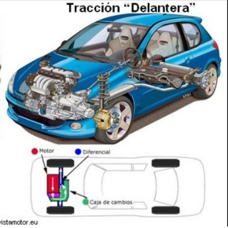
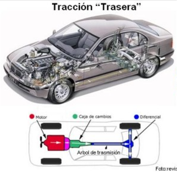
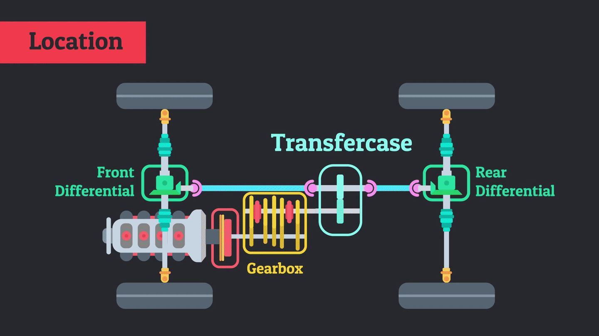

CONCEPTOS BÁSICOS - TRANSMISIONES
La transmisión de un vehículo es la encargada de
transmitir la fuerza que genera su motor a las ruedas,
y estas al pavimento.

En la imagen de arriba podemos ver el orden en el que la
fuerza del motor es pasada hasta las ruedas, si seguimos la flecha
amarilla vemos que (en orden de izquierda a derecha) la fuerza pasa
en este orden: embrague > caja de cambios > palier de transmisión.
Del palier va después al diferencial (elemento de la transmisión
encargado de en curvas, generar una diferencia de giro entre las dos ruedas del
mismo eje) y por último a las ruedas.
TIPOS DE TRANSMISIONES
PROPULSIÓN DELANTERA
Todo tipo de transmisión basa su funcionamiento en el proceso explicado anteriormente.
La particularidad de este tipo de transmisión es que envía la fuerza del motor
a las dos ruedas delaneras. Este es el tipo de transmisión que lleva la gran mayoría de
vehículos utilitarios.

PROPULSIÓN TRASERA
La propulsión trasera, en este caso envía la fuerza al eje trasero del vehículo
(ruedas traseras), este tipo de transmisión es perfecta para coches deportivos y coches de drift

PROPULSIÓN "ALL WHEEL DRIVE"
La propulsión "all wheel drive", es un tipo de transmisión como las anteriores pero esta
en vez de limitarse a transmitir la fuerza del motor a un solo eje, la transmite a los dos ejes,
tanto al delantero como al trasero. Estas suelen llevar una caja de transferencia entre los dos ejes
que es la encargada de repartir la fuerza entre estos según las circunstancias.
